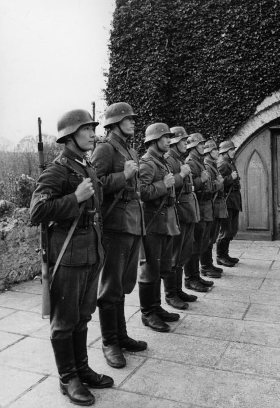

Туркестанский легион и послевоенная эмиграция (1941–1945): от плена к диаспоре на Западе
Во Второй мировой войне нацистская Германия сформировала «Туркестанский легион» из советских военнопленных — узбеков, казахов, туркмен, киргизов и таджиков. Для большинства это была не идеология, а вынужденный выбор ради выживания от голода. Эта нейтральная история на основе источников и только проверенных фактов рассказывает о создании легиона, роли Вели Каюм-хана и Мустафы Чокая и о том, как выжившие стали частью западной диаспоры.

Осенью 1941 года, когда наступление Германии на СССР застопорилось, нацисты изменили своё первоначальное «расово неполноценное» отношение к тюркским народам и решили использовать антисоветские настроения. В октябре 1941 года вермахт начал отбирать туркестанцев в лагерях военнопленных через особые комиссии, и в составе «Восточных легионов» (Ostlegionen) Туркестанский легион и Кавказско-мусульманский легион были официально созданы 13 января 1942 года. (Источник: Wikipedia — Turkestan Legion; Wehrmacht foreign volunteers and conscripts.)
Из кого он состоял
Членами легиона были в основном представители народов Центральной Азии, попавшие в плен в рядах Красной армии: узбеки, туркмены, казахи, киргизы, таджики и другие. То есть это было не добровольное идейное движение, а подразделение вермахта, сформированное из советских военнопленных. В мае 1942 года легион был брошен в бой, а к 1943 году вырос примерно до 16 батальонов и около 16 000 солдат. (Источник: Wikipedia — Turkestan Legion; Ostlegionen.)
Сколько человек?
За всю войну общее число туркестанцев, прошедших через «Восточные легионы», оценивается по-разному — примерно от 110 000 до 180 000 (одна академическая оценка — около 180 000 к 1944 году). Это суммарный показатель, отличный от численности самого легиона (~16 000) в 1943 году; точная цифра значительно расходится между источниками. (Источник: Wikipedia — Wehrmacht foreign volunteers and conscripts.)

Голод: вынужденный выбор
Для большинства вступление в легион было не идеологией, а средством выжить от голода и смерти — это нужно отметить нейтрально. Смертность в немецких лагерях была катастрофической: по некоторым данным, около 80% из примерно 100 000 туркестанских пленных погибли в первую зиму (1941–42). В лагере Ченстохова из около 32 000 туркестанцев, содержавшихся осенью 1941 года, к весне 1942 года в живых осталось, как сообщается, лишь 262 человека. (Источник: Qalam Global — Kazakhs and «Turkestanis» in German Captivity.)
Вели Каюм-хан и Туркестанский национальный комитет единства
Политическое крыло легиона возглавлял Вели Каюм-хан, эмигрантский политик, родившийся в Ташкенте 15 июля 1904 года и учившийся в Берлине с 1921 года. Он председательствовал в Туркестанском национальном комитете единства (Nationales Turkestanisches Einheitskomitee), который выполнял роль «правительства» Туркестана в изгнании; он курировал берлинскую пропаганду и подготовку пленных. После войны Каюм-хан жил без гражданства в Западной Германии и умер в Дюссельдорфе 13 августа 1993 года. (Источник: German Wikipedia — Veli Kajum-chan.)
Мустафа Чокай: предложили, но отказался
Мустафе Чокаю (Mustafo Cho'qay), бывшему главе Туркестанской (Кокандской) автономии и эмигрантскому государственному деятелю, тоже предлагали возглавить легион. После вторжения Германии в СССР (22 июня 1941) нацисты арестовали его в оккупированной Франции и привезли в Берлин. Объехав лагеря военнопленных и увидев условия, Чокай отказался от дальнейшего сотрудничества. Родившийся 25 декабря 1890 года, он умер в Берлине 27 декабря 1941 года; официальной причиной названо заражение крови на фоне эпидемии тифа, но некоторые источники (включая мемуары его жены Марии) подозревают отравление — вопрос остаётся нерешённым. После его смерти руководство политическим комитетом перешло к Вели Каюм-хану. (Источник: Wikipedia — Mustafa Shokay; e-history.kz.)
После войны: принудительная репатриация
В 1945 году большинство легионеров попало в плен к западным союзникам. По Ялтинским соглашениям, подписанным 11 февраля 1945 года, советские граждане — включая персонал «Восточных легионов» вермахта — подлежали принудительной репатриации в СССР; возвращённым грозили расстрел или ГУЛАГ как «изменникам». Процесс был массовым и часто насильственным: к концу сентября 1945 года из западных зон было возвращено около 2 034 000 советских граждан. (Источник: Wikipedia — Repatriation of Soviet citizens after World War II; Turkestan Legion.)
Формирование западной диаспоры
Туркестанцы, избежавшие принудительной репатриации, образовали эмигрантские общины в Западной Германии (Мюнхен, Кёльн) и в Турции. Вели Каюм-хан отбыл короткий срок заключения, а затем дожил свой век без гражданства в Западной Германии. Баймирза Хайит (род. 17 декабря 1917 в Намангане; ум. 31 октября 2006 в Кёльне), офицер легиона, стал известным тюркологом в Мюнстерском университете (докторская 1950), написал ряд книг по истории Туркестана и стал важным голосом эмигрантской общины. (Источник: Wikipedia — Baymirza Hayit; German Wikipedia — Veli Kajum-chan.)
Заключение
История Туркестанского легиона — не рассказ о победе или героизме, а трагедия войны, плена и вынужденного выбора. Это была одновременно попытка выжить от голода и часть политической эмиграции Туркестана в изгнании; и в итоге — через переживших ялтинские репатриации — она повлияла на формирование узбекско-туркестанской диаспоры на Западе. Некоторые детали, такие как отдельные цифры и причина смерти Чокая, спорны между источниками и приведены здесь с осторожностью и без односторонних суждений.

Источники
- Wikipedia — Turkestan Legion
- Wikipedia — Wehrmacht foreign volunteers and conscripts
- Wikipedia — Mustafa Shokay
- e-history.kz (Kazakhstan national digital history) — Mustafa Shokay
- Qalam Global — Kazakhs and "Turkestanis" in German Captivity
- Wikipedia — Repatriation of Soviet citizens after World War II
- Wikipedia — Baymirza Hayit
- German Wikipedia — Veli Kajum-chan